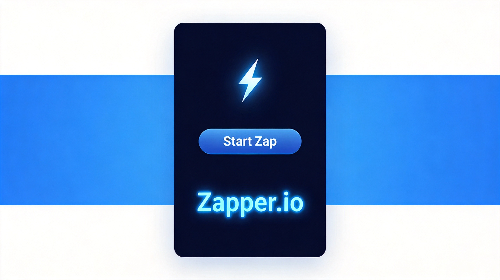
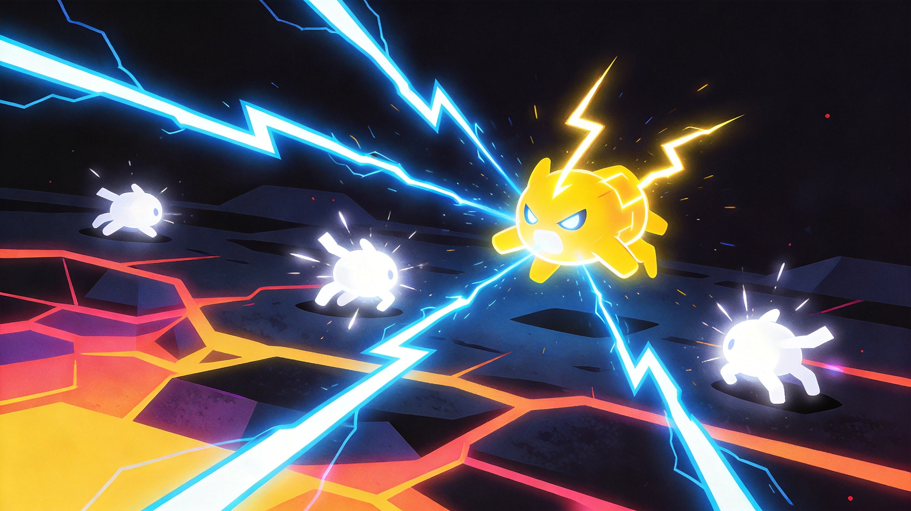
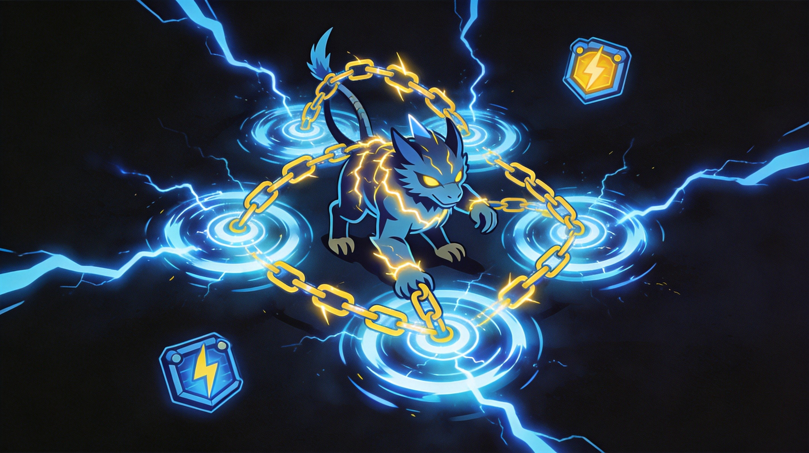

Zapper.io brings lightning-fast combat to the .io world. Your character zaps enemies with electrical attacks, grows stronger with each kill, and tries to dominate the leaderboard. The pace here is absolutely frantic—slower than average reaction times will get you eliminated constantly. This guide will help you keep up.
🎯 Game Basics

The Core Loop
Zapper.io is all about zap-to-grow gameplay. Your attacks damage enemies, kills increase your score and power, and the leaderboard determines who's winning. Simple concept, brutal execution.
Health and Energy
Two resource bars matter: health and energy. Your attacks consume energy, so managing your energy pool while dishing out damage is crucial. Run out of energy mid-fight and you're helpless.
- Health - Decreases when hit, regenerates slowly out of combat
- Energy - Powers all attacks, regenerates when not attacking
Growth System
Each kill makes you stronger. Not just score—your actual damage output increases. Bigger players hit harder, which creates snowball advantages for early leaders.
⚡ Combat Mechanics
Aim and Fire
Your attacks auto-target the nearest enemy. You can aim manually by holding the attack button and adjusting. The lock-on range determines when your zaps connect.
Attack Range
Each player's range scales with their power level. Early game, you're limited to close-quarters. As you grow, your zap range extends significantly—bigger players can hit you while you can't reach them.
Movement Speed
Speed varies based on your power level. Higher power means slower movement but harder hits. There's always a trade-off between offense and mobility.
Spamming attacks drains energy rapidly. During downtime, let your energy recharge before the next fight. Empty reserves mid-combat is a death sentence.
Energy and Combat Balance
The Zapper.io economy revolves around energy management. Attacks consume energy, but out-of-combat periods regenerate it. The best players time their engagements to coincide with full energy reserves. Fighting on empty guarantees you'll lose.
Map Positioning
Central areas of the map offer more encounters but higher risk. Edge areas provide safer grinding opportunities. Rotate between center and edges based on your power level and risk tolerance.
🎯 Core Strategies
1. Early Game: Build Power Safely
First few kills are crucial. Target weaker opponents and smaller players. Avoid fighting leaders until you've accumulated enough power to compete.
2. Hit and Run Tactics
Don't commit to extended fights early on. Zap targets, retreat to regenerate energy, then re-engage. This poke strategy accumulates damage while keeping you safe.
3. Use the Map
Obstacles and terrain block zap attacks. Use walls to break line-of-sight, retreat behind cover, and ambush opponents who chase you around corners.
4. Know When to Chase
Low-health enemies are tempting but sometimes aren't worth the chase. If someone's running toward their teammates or a health pickup, the ambush risk might exceed the reward.
5. Ambush Tactics
Position yourself in high-traffic areas and wait. When players pass by, zap them from behind or the side. Ambushes deal damage before opponents can react, giving you immediate advantage.
6. Power Stacking
Early kills compound quickly. Each death you avoid and each kill you secure adds to your power level. Power advantages become self-reinforcing—stronger players win more fights, earning more power.
7. Environmental Abuse
The arena has walls, pillars, and obstacles. Use them constantly. Break line of sight to regenerate energy safely, then re-engage when ready. Skilled players use terrain constantly.
8. Reading Enemy Behavior
Watch how opponents move. Aggressive players telegraph charges with movement speed. Defensive players often retreat before committing. Read patterns and exploit them.

💎 Pro Tips
Stay in motion. Stationary targets are easy zaps. Keep moving even when regenerating—circling obstacles makes you harder to hit.
Target groups of weak enemies. Multiple low-power players provide safe kill opportunities. One strong player among them is often distracted.
Preserve energy for decisive moments. Don't zap at max range when you could close distance. Conserve energy until you're certain of kills.
Play conservatively after respawns. Fresh spawns are weak and vulnerable. Avoid fights until you've built enough power to compete.

❓ Frequently Asked Questions
How do I increase my power level in Zapper.io?
Kill opponents to gain power. Each kill adds to your power stat, increasing damage output and attack range. Deaths reset your progress.
What happens when my energy runs out?
You can't attack while energy is depleted. Retreat from combat and wait for energy to regenerate. Energy refills automatically when you're not attacking.
Why do bigger players seem impossible to fight?
Higher power players have more damage and longer range. Early game, avoid them entirely. Build your power on smaller targets before attempting boss fights.
Can I block or dodge attacks?
Not directly, but terrain provides cover. Stay behind walls and obstacles to avoid incoming zaps. Movement also makes you harder to hit.
What's the best strategy for new players?
Focus on weak targets and avoid strong players. Build power incrementally rather than taking risky fights. Survival and consistent small gains beat aggressive plays that end in death.
Do teammates share kills?
Team mechanics vary by game mode. In team play, coordinate attacks to secure kills for your most powerful member while protecting weaker teammates.
📝 Related Games to Try
Enjoy lightning combat? Check out Venge.io for shooter action, Bonk.io for physics-based battles, or Goons.io for melee combat.
📝 Conclusion
Zapper.io rewards quick reactions and smart energy management. Build power safely, pick your fights, and capitalize on opportunities. The leaderboard favors consistent players over reckless ones.
Get zapping! Good reflexes and tactical awareness will carry you to the top.
Last updated: January 20, 2024
Written by the iogameguide.com team